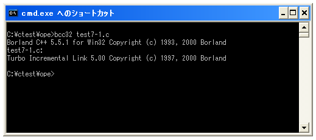
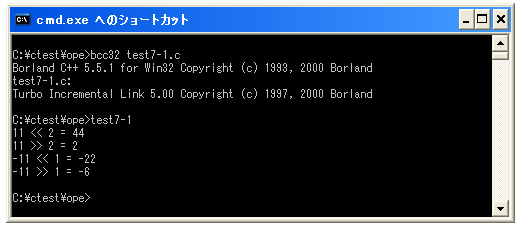

シフト演算子
シフト演算子はビット演算子の一つで数値の各ビットを左又は右へシフトさせるための演算子です。
シフト演算子だけもう一度確認してみます。
| 演算子 | 記述例 | 意味 |
|---|---|---|
| <<= | a = a << 2 | 左シフト |
| >>= | a = a >> 2 | 右シフト |
それではまず左シフトから確認してみます。例として11(0x000B)を1ビット左へシフトさせてみます。
0000000000001011 = 11 ---------------- 0000000000010110 = 22
各ビットを指定した数だけ左へシフトします。左端からはみ出した部分は削除され、シフトしたことによって空いた右端は「0」が格納されます。結果として11を1ビット左へシフトすると22となります。
では同じように11(0x000B)を2ビット左へシフトさせてみます。
0000000000001011 = 11 ---------------- 0000000000101100 = 44
11を左へ2ビットシフトすると44となります。プログラムで実際に記述する場合は次のようになります。
short int a = 0x000B; a = a << 2;
では今度は右シフトを確認してみます。例として11(0x000B)を1ビット右へシフトさせてみます。
0000000000001011 = 11 ---------------- 0000000000000101 = 5
各ビットを指定した数だけ右へシフトします。右端からはみ出した部分は削除され、シフトしたことによって空いた左端は「0」が格納されます。結果として11を1ビット右へシフトすると5となります。プログラムで実際に記述する場合は次のようになります。
short int a = 0x000B; a = a >> 1;
※なお2進数において左へ1ビットシフトするとうことは数値が2倍になることを表しています。また右へ1ビットシフトするということは数値が1/2になることを表しています。
負の数を右シフトする場合の注意点
負の数を右シフトする場合には注意が必要です。例えば-11と言う数値を例に考えてみます。
1111111111110101 = -11
右へ1つシフトさせてみます。前述した説明ですと右へシフトした結果空いた左端には0を追加していました。
1111111111110101 ---------------- 0111111111111010
最上位ビットが「1」の場合は負の数ですが、右へシフトさせることによって正の数になってしまいます。そこで負の数の場合には右へシフトした結果空いた左端には1を追加する場合があります。
1111111111110101 ---------------- 1111111111111010
負の数に対して右シフトを行った結果がどうなるのかは処理系によって異なります。プログラムが同じでも処理系によって結果が異なる可能性がありますので、負の数に対して右シフトはあまり行わない方がいいかもしれません。
サンプルプログラム
では簡単なサンプルプログラムを作成して試してみます。
#include <stdio.h>
int main(void){
short int a;
a = 11;
printf("%d << 2 = %d¥n", a, a << 2);
printf("%d >> 2 = %d¥n", a, a >> 2);
a = -11;
printf("%d << 1 = %d¥n", a, a << 1);
printf("%d >> 1 = %d¥n", a, a >> 1);
return 0;
}
上記を「test7-1.c」の名前で保存します。まずコンパイルを行います。

コンパイルが終わりましたら「test7-1」と入力して実行します。

今回の処理系では負の数に対して右シフトした場合には左端に「1」が追加されました。
( Written by Tatsuo Ikura )

著者 / TATSUO IKURA
初心者～中級者の方を対象としたプログラミング方法や開発環境の構築の解説を行うサイトの運営を行っています。